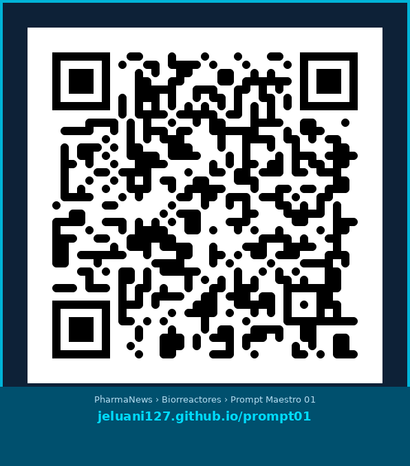
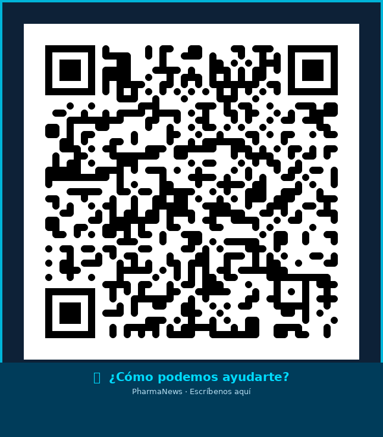

Revista Farmacéutica #1 en México
Revista Farmacéutica #1 en México
PharmaNews ahora te ofrece análisis de datos con IA, mejora de procesos y herramientas gratuitas diseñadas para la industria farmacéutica mexicana. Directamente desde la revista que ya conoces y confías.
¿En qué te ayudamos?
Herramientas y prompts especializados para transformar los datos de tu proceso en reportes, gráficas y decisiones — en minutos.
Análisis estadístico completo: pH, temperatura, DO%, series de tiempo, regresión, SPC y riesgo financiero por lote.
✅ Disponible gratis100 prompts para identificar desperdicios, mapear flujos de valor, calcular OEE y optimizar la producción.
🔜 PróximamenteAnálisis de desviaciones, CAPA, tendencias de rechazos, control estadístico de proceso y preparación para auditorías.
🔜 PróximamenteExtrae datos de batch records en PDF o Excel, detecta inconsistencias y genera resumen de cumplimiento automáticamente.
🔜 PróximamenteAnálisis de causa raíz, diagramas de Ishikawa con IA, priorización de proyectos y seguimiento de KPIs de mejora.
🔜 PróximamenteAnálisis de fallas, MTBF/MTTR, predicción de mantenimiento preventivo y optimización de inventario de refacciones.
🔜 PróximamenteGenera reportes GMP de entrenamiento, matrices de habilidades, brechas de conocimiento y planes de capacitación anuales.
🔜 PróximamenteConstruye tu tablero de mando con indicadores por perspectiva, semaforización automática y análisis de brechas estratégicas.
🔜 PróximamenteCosto por lote, varianzas, análisis ABC de insumos, impacto de rechazos y simulación de escenarios de ahorro.
🔜 PróximamenteP&L de operación, flujo de caja, análisis de rentabilidad por línea de producto y proyecciones con escenarios.
🔜 PróximamenteDashboard automático de KPIs de planta, comparativos mensuales, tendencias y alertas de desempeño.
🔜 PróximamenteMatrices de riesgo con IA, análisis FMEA, cuantificación de impacto financiero y planes de mitigación priorizados.
🔜 PróximamenteIdentifica brechas entre el estado actual y el requerido: regulatorias, de proceso, de competencias o de infraestructura, con plan de cierre priorizado.
🔜 PróximamenteValida automáticamente tus SOPs, batch records y registros contra los requisitos FDA, EMA, COFEPRIS o ISO — detecta incumplimientos antes de una auditoría.
🔜 PróximamenteCuando el personal cambia constantemente, la IA genera planes de onboarding exprés, evaluaciones rápidas y matrices de competencias actualizadas automáticamente.
🔜 Próximamente¿Cómo funciona?
No necesitas saber programar. Solo tus datos y un asistente de IA.
Desde la revista o esta página, escanea el QR del área que necesitas analizar.
Con un clic copias el prompt especializado y lo pegas en Claude AI o Microsoft Copilot.
Sube tu Excel, CSV o PDF. El asistente lee, analiza y detecta patrones automáticamente.
Estadísticas, gráficas, regresiones, semáforos y recomendaciones de acción en minutos.
Excel profesional, reporte Word y presentación PowerPoint listos para presentar.
Herramientas Gratuitas
Dos herramientas gratuitas disponibles ahora mismo — sin registro, sin costo.

Análisis estadístico completo de tus datos de biorreactor. Genera Excel, Word y PowerPoint automáticamente. Compatible con Claude AI y Microsoft Copilot.
Incluye:
✅ Estadística descriptiva · Series de tiempo · Correlaciones · Regresión · SPC · Auditoría de sensores · Riesgo financiero

¿Tienes datos de otro proceso? ¿Necesitas un prompt personalizado para tu área? Cuéntanos — lo desarrollamos para ti.
Podemos ayudarte con:
📋 Prompts a medida · Análisis de datos · Consultoría de proceso · Capacitación en IA
Tu experto
Experto en Contract Manufacturing, Operaciones Farmacéuticas y Adquisiciones con más de 25 años de experiencia en la industria farmacéutica mexicana e internacional. Senior Advisor en USM Systems, aplicando Inteligencia Artificial a la mejora de procesos de manufactura, calidad y bioprocesos.
Colaborador de PharmaNews® — la Revista Farmacéutica #1 en México — llevando herramientas de IA accesibles a los profesionales de la industria.
Formación Académica
Empieza con el Prompt Maestro 01 gratuito o escríbenos para un prompt personalizado a tu proceso.